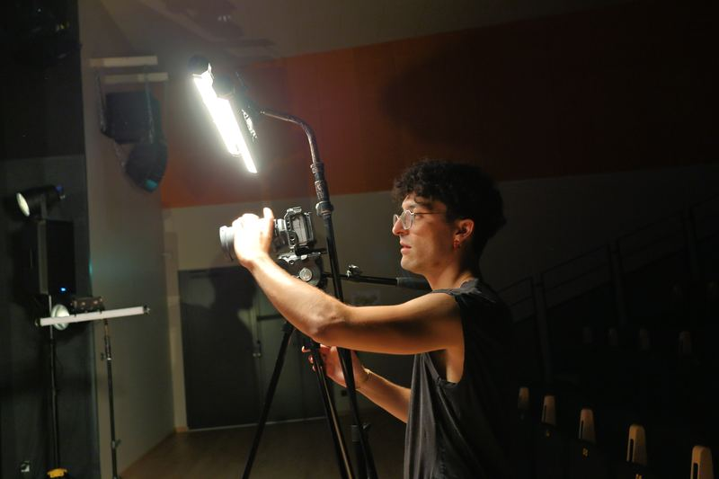
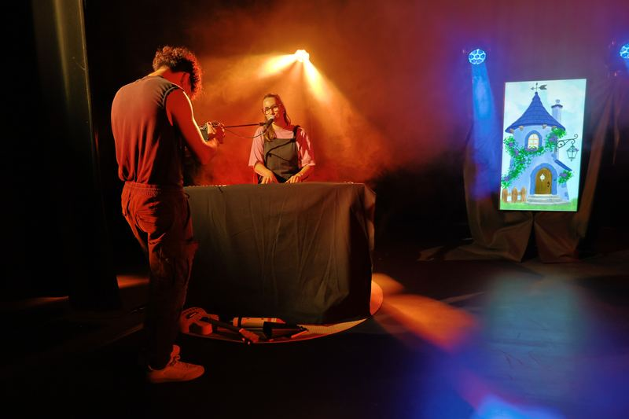
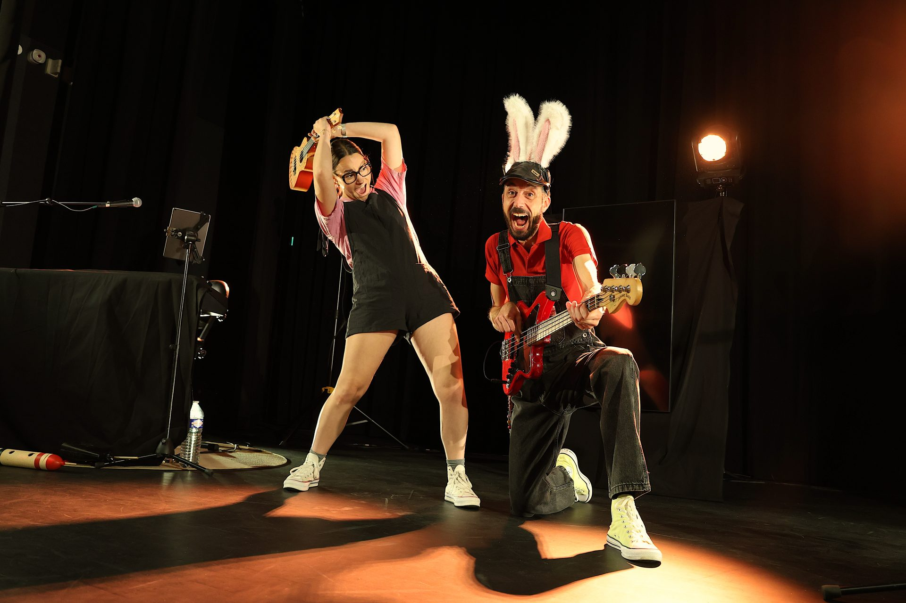

Du 12 au 16 octobre, l'équipe du spectacle Mémoria s'est retrouvée aux Lucs-sur-Boulogne pour une deuxième semaine de résidence artistique, marquant l'aboutissement de plusieurs mois de création.
Une semaine intense et enrichissante
Une semaine rythmée par les derniers ajustements du spectacle et l'intervention de plusieurs professionnels.
Sébastien Haméon, metteur en scène, a accompagné les artistes durant une journée pour peaufiner les derniers détails scéniques. Camille Buffet, coach vocale, est également intervenue le temps d'une matinée pour approfondir le travail vocal.
Le tournage du teaser
Une journée entière a aussi été consacrée à la captation vidéo du futur teaser du spectacle, afin de mettre en images l'univers de Mémoria. Le voici :


Près de 400 enfants au rendez-vous
Pour clôturer cette résidence, deux représentations ont été proposées le vendredi 16 octobre aux écoles publiques et privées des Lucs-sur-Boulogne. La première séance était destinée aux plus grands, tandis que la seconde accueillait les enfants de maternelle.
Au total, près de 400 enfants ont découvert le spectacle dans sa version finalisée ! Des rires, de l'émerveillement, de belles émotions et des réactions spontanées… Une magnifique récompense pour les artistes, qui ont enfin pu partager leur univers avec leur jeune public !

Une étape s'achève, l'aventure commence
Ces deux représentations sont venues couronner plusieurs mois d'écriture, de répétitions et de création. Une belle façon de conclure cette résidence et de mesurer tout le chemin parcouru.
Une étape importante s'achève pour l'équipe, mais l'aventure Mémoria ne fait que commencer !
Retrouvez d'autres photos de la résidence dans la galerie, onglet « Moments de vie ».
Article publié le 5 novembre 2026 par Jean et Zoé.